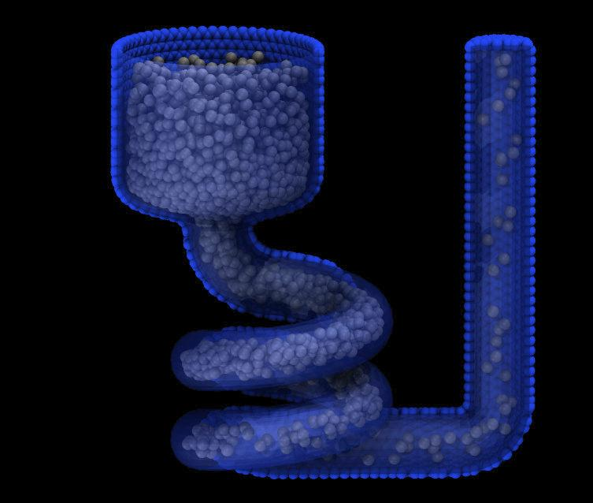
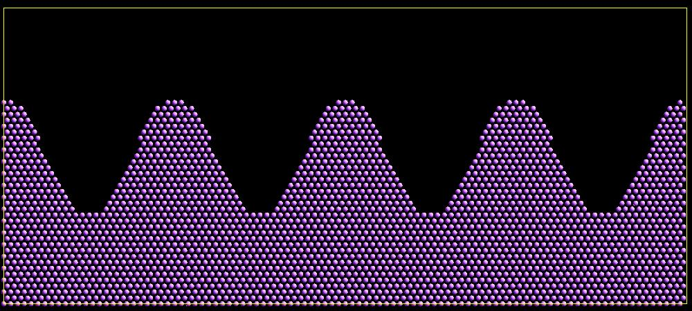
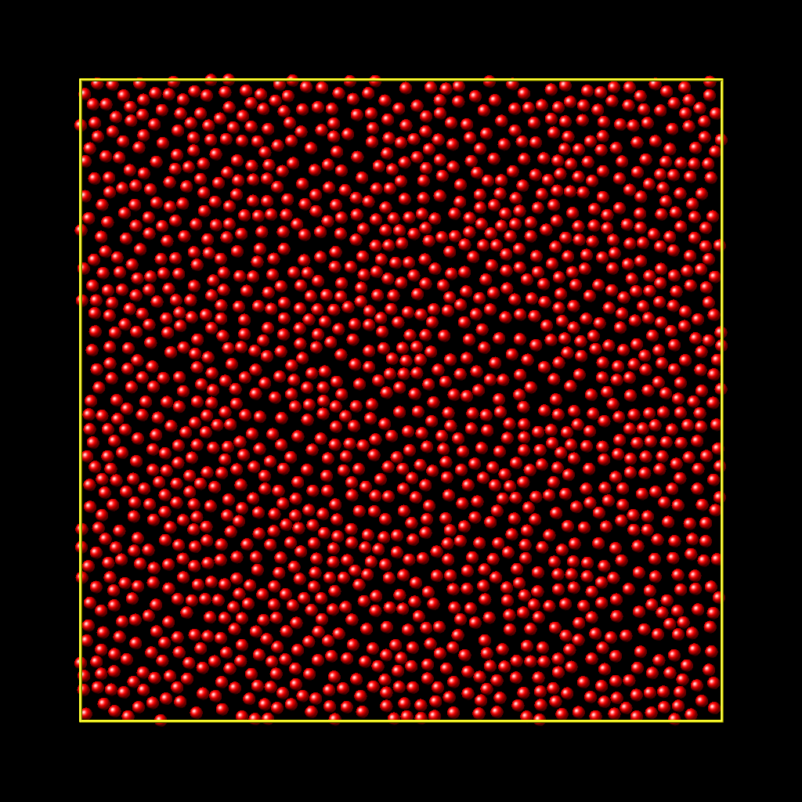

\(\renewcommand{\AA}{\text{Å}}\)
create_atoms command
Syntax
create_atoms type style args keyword values ...
type = atom type (1-Ntypes or type label) of atoms to create (offset for molecule creation)
style = box or region or single or mesh or random
box args = none region args = region-ID region-ID = particles will only be created if contained in the region single args = x y z x,y,z = coordinates of a single particle (distance units) mesh args = STL-file STL-file = file with triangle mesh in STL format random args = N seed region-ID N = number of particles to create seed = random # seed (positive integer) region-ID = create atoms within this region, use NULL for entire simulation box
zero or more keyword/value pairs may be appended
keyword = mol or basis or ratio or subset or group or remap or var or set or radscale or meshmode or rotate or overlap or maxtry or units
mol values = template-ID seed template-ID = ID of molecule template specified in a separate molecule command seed = random # seed (positive integer) basis values = M itype M = which basis atom itype = atom type (1-Ntypes or type label) to assign to this basis atom ratio values = frac seed frac = fraction of lattice sites (0 to 1) to populate randomly seed = random # seed (positive integer) subset values = Nsubset seed Nsubset = # of lattice sites to populate randomly seed = random # seed (positive integer) group value = group name remap value = yes or no var value = name = variable name to evaluate for test of atom creation set values = dim name dim = x or y or z name = name of variable to set with x, y, or z atom position radscale value = factor factor = scale factor for setting atom radius meshmode values = mode arg mode = bisect or qrand bisect arg = radthresh radthresh = threshold value for mesh to determine when to split triangles (distance units) qrand arg = density density = minimum number density for atoms place on mesh triangles (inverse distance squared units) rotate values = theta Rx Ry Rz theta = rotation angle for single molecule (degrees) Rx,Ry,Rz = rotation vector for single molecule overlap value = Doverlap Doverlap = only insert if at least this distance from all existing atoms maxtry value = Ntry Ntry = number of attempts to insert a particle before failure units value = lattice or box lattice = the geometry is defined in lattice units box = the geometry is defined in simulation box units
Examples
create_atoms 1 box
labelmap atom 1 Pt
create_atoms Pt box
labelmap atom 1 C 2 Si
create_atoms C region regsphere basis 1 Si
create_atoms 2 region regsphere basis 2 3
create_atoms 1 region regsphere basis 2 2 ratio 0.5 74637
create_atoms 3 single 0 0 5 group newatom
create_atoms 1 box var v set x xpos set y ypos
create_atoms 2 random 50 12345 NULL overlap 2.0 maxtry 50
create_atoms 1 mesh open_box.stl meshmode qrand 0.1 units box
create_atoms 1 mesh funnel.stl meshmode bisect 4.0 units box radscale 0.9
Description
This command creates atoms (or molecules) within the simulation box, either on a lattice, or at random points, or on a surface defined by a triangulated mesh. Or it creates a single atom (or molecule) at a specified point. It is an alternative to reading in atom coordinates explicitly via a read_data or read_restart command.
To use this command a simulation box must already exist, which is typically created via the create_box command. Before using this command, a lattice must typically also be defined using the lattice command, unless you specify the single or mesh style with units = box or the random style. To create atoms on a lattice for general triclinic boxes, see the discussion below.
For the remainder of this doc page, a created atom or molecule is referred to as a “particle”.
If created particles are individual atoms, they are assigned the specified atom type, though this can be altered via the basis keyword as discussed below. If molecules are being created, the type of each atom in the created molecule is specified in a specified file read by the molecule command, and those values are added to the specified atom type (e.g., if type = 2 and the file specifies atom types 1, 2, and 3, then each created molecule will have atom types 3, 4, and 5).
Atoms outside the box
You cannot use this command to create atoms that are outside the simulation box; they will just be ignored by LAMMPS. This is true even if you are using shrink-wrapped box boundaries, as specified by the boundary command. However, you can first use the change_box command to temporarily expand the box, then add atoms via create_atoms, then finally use change_box command again if needed to re-shrink-wrap the new atoms. See the change_box doc page for an example of how to do this, using the create_atoms single style to insert a new atom outside the current simulation box.
For the box style, the create_atoms command fills the entire simulation box with particles on the lattice. If your simulation box is periodic, you should ensure its size is a multiple of the lattice spacings, to avoid unwanted atom overlaps at the box boundaries. If your box is periodic and a multiple of the lattice spacing in a particular dimension, LAMMPS is careful to put exactly one particle at the boundary (on either side of the box), not zero or two.
For the region style, a geometric volume is filled with particles on the lattice. This volume is what is both inside the simulation box and also consistent with the region volume. See the region command for details. Note that a region can be specified so that its “volume” is either inside or outside its geometric boundary. Also note that if a region is the same size as a periodic simulation box (in some dimension), LAMMPS does NOT implement the same logic described above for the box style, to ensure exactly one particle at periodic boundaries. If this is desired, you should either use the box style, or tweak the region size to get precisely the particles you want.
If the simulation box is formulated as a general triclinic box defined by arbitrary edge vectors A, B, C, then the box and region styles will create atoms on a lattice commensurate with those edge vectors. See the Howto_triclinic doc page for a detailed explanation of orthogonal, restricted triclinic, and general triclinic simulation boxes. As with the create_box command, the lattice command used by this command must be of style custom and use its triclinic/general option. The a1, *a2, a3 settings of the lattice command define the edge vectors of a unit cell of the general triclinic lattice. The create_box command creates a simulation box which replicates that unit cell along each of the A, B, C edge vectors.
Note
LAMMPS allows specification of general triclinic simulation boxes as a convenience for users who may be converting data from solid-state crystallographic representations or from DFT codes for input to LAMMPS. However, as explained on the Howto_triclinic doc page, internally, LAMMPS only uses restricted triclinic simulation boxes. This means the box created by the create_box command as well as the atoms created by this command with their per-atom information (e.g. coordinates, velocities) are converted (rotated) from general to restricted triclinic form when the two commands are invoked. The Howto_triclinic doc page also discusses other LAMMPS commands which can input/output general triclinic representations of the simulation box and per-atom data.
The box style will fill the entire general triclinic box with particles on the lattice, as explained above.
Note
The region style also operates as explained above, but the check for particles inside the region is performed after the particle coordinates have been converted to the restricted triclinic box. This means the region must also be defined with respect to the restricted triclinic box, not the general triclinic box.
If the simulation box is general triclinic, the single, random, and mesh styles described next operate on the box after it has been converted to restricted triclinic. So all the settings for those styles should be made in that context.
For the single style, a single particle is added to the system at the specified coordinates. This can be useful for debugging purposes or to create a tiny system with a handful of particles at specified positions. For a 2d simulation the specified z coordinate must be 0.0.
Changed in version 2Jun2022.
The porosity style has been renamed to random with added functionality.
For the random style, N particles are added to the system at randomly generated coordinates, which can be useful for generating an amorphous system. For 2d simulations, the z coordinates of all added atoms will be 0.0.
The particles are created one by one using the specified random number seed, resulting in the same set of particle coordinates, independent of how many processors are being used in the simulation. Unless the overlap keyword is specified, particles created by the random style will typically be highly overlapped. Various additional criteria can be used to accept or reject a random particle insertion; see the keyword discussion below. Multiple attempts per particle are made (see the maxtry keyword) until the insertion is either successful or fails. If this command fails to add all requested N particles, a warning will be output.
If the region-ID argument is specified as NULL, then the randomly created particles will be anywhere in the simulation box. If a region-ID is specified, a geometric volume is filled that is both inside the simulation box and is also consistent with the region volume. See the region command for details. Note that a region can be specified so that its “volume” is either inside or outside its geometric boundary.
Note that the create_atoms command adds particles to those that already exist. This means it can be used to add particles to a system previously read in from a data or restart file. Or the create_atoms command can be used multiple times, to add multiple sets of particles to the simulation. For example, grain boundaries can be created, by interleaving the create_atoms command with lattice commands specifying different orientations.
When this command is used, care should be taken to ensure the resulting system does not contain particles that are highly overlapped. Such overlaps will cause many interatomic potentials to compute huge energies and forces, leading to bad dynamics. There are several strategies to avoid this problem:
Use the delete_atoms overlap command after create_atoms. For example, this strategy can be used to overlay and surround a large protein molecule with a volume of water molecules, then delete water molecules that overlap with the protein atoms.
For the random style, use the optional overlap keyword to avoid overlaps when each new particle is created.
Before running dynamics on an overlapped system, perform an energy minimization. Or run initial dynamics with pair_style soft or with fix nve/limit to un-overlap the particles, before running normal dynamics.
{kind=link}

Added in version 2Jun2022.
For the mesh style, a file with a triangle mesh in STL format is read and one or more particles are placed into the area of each triangle. The reader supports both ASCII and binary files conforming to the format on the Wikipedia page. Binary STL files (e.g. as frequently offered for 3d-printing) can also be first converted to ASCII for editing with the stl_bin2txt tool. The use of the units box option is required. There are two algorithms available for placing atoms: bisect and qrand. They can be selected via the meshmode option; bisect is the default. If the atom style allows it, the radius will be set to a value depending on the algorithm and the value of the radscale parameter (see below), and the atoms created from the mesh are assigned a new molecule ID.
In bisect mode a particle is created at the center of each triangle unless the average distance of the triangle vertices from its center is larger than the radthresh value (default is lattice spacing in x-direction). In case the average distance is over the threshold, the triangle is recursively split into two halves along the the longest side until the threshold is reached. There will be at least one sphere per triangle. The value of radthresh is set as an argument to meshmode bisect. The average distance of the vertices from the center is also used to set the radius.
In qrand mode a quasi-random sequence is used to distribute particles on mesh triangles using an approach by (Roberts). Particles are added to the triangle until the minimum number density is met or exceeded such that every triangle will have at least one particle. The minimum number density is set as an argument to the qrand option. The radius will be set so that the sum of the area of the radius of the particles created in place of a triangle will be equal to the area of that triangle.
Note
The atom placement algorithms in the mesh style benefit from meshes where triangles are close to equilateral. It is therefore recommended to pre-process STL files to optimize the mesh accordingly. There are multiple open source and commercial software tools available with the capability to generate optimized meshes.
Note
In most cases the atoms created in mesh style will become an immobile or rigid object that would not be time integrated or moved by fix move or fix rigid. For computational efficiency and to avoid undesired contributions to pressure and potential energy due to close contacts, it is usually beneficial to exclude computing interactions between the created particles using neigh_modify exclude.
Individual atoms are inserted by this command, unless the mol keyword is used. It specifies a template-ID previously defined using the molecule command, which reads a file that defines the molecule. The coordinates, atom types, charges, etc, as well as any bond/angle/etc and special neighbor information for the molecule can be specified in the molecule file. See the molecule command for details. The only settings required to be in this file are the coordinates and types of atoms in the molecule.
Note
If you are using the mol keyword in combination with the atom style template command, they must use the same molecule template-ID.
Using a lattice to add molecules, e.g. via the box or region or single styles, is exactly the same as adding atoms on lattice points, except that entire molecules are added at each point, i.e. on the point defined by each basis atom in the unit cell as it tiles the simulation box or region. This is done by placing the geometric center of the molecule at the lattice point, and (by default) giving the molecule a random orientation about the point. The random seed specified with the mol keyword is used for this operation, and the random numbers generated by each processor are different. This means the coordinates of individual atoms (in the molecules) will be different when running on different numbers of processors, unlike when atoms are being created in parallel.
Note that with random rotations, it may be important to use a lattice with a large enough spacing that adjacent molecules will not overlap, regardless of their relative orientations. See the description of the rotate keyword below, which overrides the default random orientation and inserts all molecules at a specified orientation.
Note
If the create_box command is used to create the simulation box, followed by the create_atoms command with its mol option for adding molecules, then you typically need to use the optional keywords allowed by the create_box command for extra bonds (angles,etc) or extra special neighbors. This is because by default, the create_box command sets up a non-molecular system that does not allow molecules to be added.
This is the meaning of the other optional keywords.
The basis keyword is only used when atoms (not molecules) are being created. It specifies an atom type that will be assigned to specific basis atoms as they are created that overrides the default atom type. See the lattice command for specifics on how basis atoms are defined for the unit cell of the lattice. By default, all created atoms are assigned the argument type as their atom type. To illustrate this please see the following 4 example create_atom command lines that all create the same system:
lattice diamond 4.36
create_atoms 1 box basis 1 1 basis 2 2 basis 3 1 basis 4 2 basis 5 1 basis 6 2 basis 7 1 basis 8 2
create_atoms 2 box basis 1 1 basis 2 2 basis 3 1 basis 4 2 basis 5 1 basis 6 2 basis 7 1 basis 8 2
create_atoms 1 box basis 2 2 basis 4 2 basis 6 2 basis 8 2
create_atoms 2 box basis 1 1 basis 3 1 basis 5 1 basis 7 1
The ratio and subset keywords can be used in conjunction with the box or region styles to limit the total number of particles inserted. The lattice defines a set of Nlatt eligible sites for inserting particles, which may be limited by the region style or the var and set keywords. For the ratio keyword, only the specified fraction of them (\(0 \le f \le 1\)) will be assigned particles. For the subset keyword only the specified Nsubset of them will be assigned particles. In both cases the assigned lattice sites are chosen randomly. An iterative algorithm is used that ensures the correct number of particles are inserted, in a perfectly random fashion. Which lattice sites are selected will change with the number of processors used.
Added in version 12Jun2025.
The group keyword adds the newly created atoms to the named group. If the group does not yet exist it will be created. There can be only one such group, thus if the group keyword is used multiple times, only the last one will be used. All created atoms are always added to the group “all”.
The remap keyword only applies to the single style. If it is set to yes, then if the specified position is outside the simulation box, it will mapped back into the box, assuming the relevant dimensions are periodic. If it is set to no, no remapping is done and no particle is created if its position is outside the box.
The var and set keywords can be used together to provide a criterion for accepting or rejecting the addition of an individual atom, based on its coordinates. They apply to all styles except single. The name specified for the var keyword is the name of an equal-style variable that should evaluate to a zero or non-zero value based on one or two or three variables that will store the x, y, or z coordinates of an atom (one variable per coordinate). If used, these other variables must be specified by the set keyword. They are internal-style variable, because this command resets their values directly. The internal-style variables do not need to be defined in the input script (though they can be); if one (or more) is not defined, then the set option creates an internal-style variable with the specified name.
{kind=link}

When an atom is about to be created, its \((x,y,z)\) coordinates become the values for any set variable that is defined. The var variable is then evaluated. If the returned value is 0.0, the atom is not created. If it is non-zero, the atom is created.
As an example, these commands can be used in a 2d simulation, to create a sinusoidal surface. Note that the surface is “rough” due to individual lattice points being “above” or “below” the mathematical expression for the sinusoidal curve. If a finer lattice were used, the sinusoid would appear to be “smoother”. Also note the use of the “xlat” and “ylat” thermo_style keywords, which converts lattice spacings to distance.
(Click on the image for a larger version)
dimension 2
variable x equal 100
variable y equal 25
lattice hex 0.8442
region box block 0 $x 0 $y -0.5 0.5
create_box 1 box
variable v equal "(0.2*v_y*ylat * cos(v_xx/xlat * 2.0*PI*4.0/v_x) + 0.5*v_y*ylat - v_yy) > 0.0"
create_atoms 1 box var v set x xx set y yy
write_dump all atom sinusoid.lammpstrj
The rotate keyword allows specification of the orientation at which molecules are inserted. The axis of rotation is determined by the rotation vector \((R_x,R_y,R_z)\) that goes through the insertion point. The specified theta determines the angle of rotation around that axis. Note that the direction of rotation for the atoms around the rotation axis is consistent with the right-hand rule: if your right-hand’s thumb points along R, then your fingers wrap around the axis in the direction of rotation.
The radscale keyword only applies to the mesh style and adjusts the radius of created particles (see above), provided this is supported by the atom style. Its value is a prefactor (must be \(>\) 0.0, default is 1.0) that is applied to the atom radius inferred from the size of the individual triangles in the triangle mesh that the particle corresponds to.
Added in version 2Jun2022.
The overlap keyword only applies to the random style. It prevents newly created particles from being created closer than the specified Doverlap distance from any other particle. If particles have finite size (see atom_style sphere for example) Doverlap should be specified large enough to include the particle size in the non-overlapping criterion. If molecules are being randomly inserted, then an insertion is only accepted if each particle in the molecule meets the overlap criterion with respect to other particles (not including particles in the molecule itself).
Note
Checking for overlaps is a costly \(\mathcal{O}(N(N+M))\) operation for inserting N new particles into a system with M existing particles. This is because distances to all M existing particles are computed for each new particle that is added. Thus the intended use of this keyword is to add relatively small numbers of particles to systems that remain at a relatively low density even after the new particles are created. Careful use of the maxtry keyword in combination with overlap is recommended. See the discussion above about systems with overlapped particles for alternate strategies that allow for overlapped insertions.
Added in version 2Jun2022.
The maxtry keyword only applies to the random style. It limits the number of attempts to generate valid coordinates for a single new particle that satisfy all requirements imposed by the region, var, and overlap keywords. The default is 10 attempts per particle before the loop over the requested N particles advances to the next particle. Note that if insertion success is unlikely (e.g., inserting new particles into a dense system using the overlap keyword), setting the maxtry keyword to a large value may result in this command running for a long time.
{kind=link}

Here is an example for the random style using these commands
units lj
dimension 2
region box block 0 50 0 50 -0.5 0.5
create_box 1 box
create_atoms 1 random 2000 13487 NULL overlap 1.0 maxtry 50
pair_style lj/cut 2.5
pair_coeff 1 1 1.0 1.0 2.5
to produce a system as shown in the image with 1520 particles (out of 2000 requested) that are moderately dense and which have no overlaps sufficient to prevent the LJ pair_style from running properly (because the overlap criterion is 1.0). The create_atoms command ran for 0.3 s on a single CPU core.
(Click on the image for a larger version)
The units keyword determines the meaning of the distance units used by parameters for various styles. A box value selects standard distance units as defined by the units command (e.g., \(\AA\) for units = real or metal. A lattice value means the distance units are in lattice spacings. These are affected settings:
for single style: coordinates of the particle created
for random style: overlap distance Doverlap by the overlap keyword
for mesh style: bisect threshold value for meshmode = bisect
for mesh style: radthresh value for meshmode = bisect
for mesh style: density value for meshmode = qrand
Since density represents an area (distance ^2), the lattice spacing factor is also squared.
Atom IDs are assigned to created atoms in the following way. The collection of created atoms are assigned consecutive IDs that start immediately following the largest atom ID existing before the create_atoms command was invoked. This is done by the processor’s communicating the number of atoms they each own, the first processor numbering its atoms from \(1\) to \(N_1\), the second processor from \(N_1+1\) to \(N_2\), and so on, where \(N_1\) is the number of atoms owned by the first processor, \(N_2\) is the number owned by the second processor, and so forth. Thus, when the same simulation is performed on different numbers of processors, there is no guarantee a particular created atom will be assigned the same ID in both simulations. If molecules are being created, molecule IDs are assigned to created molecules in a similar fashion.
Aside from their ID, atom type, and \(xyz\) position, other properties of created atoms are set to default values, depending on which quantities are defined by the chosen atom style. See the atom style command for more details. See the set and velocity commands for info on how to change these values.
charge = 0.0
dipole moment magnitude = 0.0
diameter = 1.0
shape = 0.0 0.0 0.0
density = 1.0
volume = 1.0
velocity = 0.0 0.0 0.0
angular velocity = 0.0 0.0 0.0
angular momentum = 0.0 0.0 0.0
quaternion = (1,0,0,0)
bonds, angles, dihedrals, impropers = none
If molecules are being created, these defaults can be overridden by values specified in the file read by the molecule command. That is, the file typically defines bonds (angles, etc.) between atoms in the molecule, and can optionally define charges on each atom.
Note that the sphere atom style sets the default particle diameter to 1.0 as well as the density. This means the mass for the particle is not 1.0, but is \(\frac{\pi}{6} d^3 = 0.5236\), where \(d\) is the diameter. When using the mesh style, the particle diameter is adjusted from the size of the individual triangles in the triangle mesh.
Note that the ellipsoid atom style sets the default particle shape to (0.0 0.0 0.0) and the density to 1.0, which means it is a point particle, not an ellipsoid, and has a mass of 1.0.
Note that the peri style sets the default volume and density to 1.0 and thus also set the mass for the particle to 1.0.
The set command can be used to override many of these default settings.
Restrictions
An atom_style must be previously defined to use this command.
A rotation vector specified for a single molecule must be in the z-direction for a 2d model.
For molecule templates that are created from multiple files, i.e. contain multiple molecule sets, only the first set is used. To create multiple molecules the files currently need to be merged and different molecule IDs assigned with a Molecules section.
Default
The default for the basis keyword is that all created atoms are assigned the argument type as their atom type (when single atoms are being created). The other defaults are remap = no, rotate = random, radscale = 1.0, radthresh = x-lattice spacing, overlap not checked, maxtry = 10, and units = lattice.
(Roberts) R. Roberts (2019) “Evenly Distributing Points in a Triangle.” Extreme Learning. https://extremelearning.com.au/evenly-distributing-points-in-a-triangle/